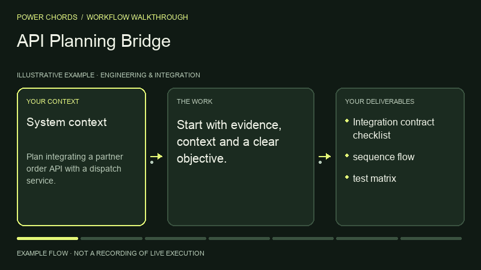

Engineering & Integration · BY POWER CHORDS
API Planning Bridge
Plan a robust API integration.
Your context. A result to review.
- Published by
- Power Chords
- Use with
- Codex workspace
Run in your local Codex workspace, or use the instructions with another equipped agent. Review results before acting. - Bring it to
- Claude Code · Codex · Cursor · Gemini CLI · other agents via Markdown
- Result
- Integration contract checklist
SEE THE PROCESS
From context to integration contract checklist.
An illustrated example of the workflow.

THE WORK, DEFINED
Inputs and outputs
What you bring
- System context
- API documentation
- payloads
- security requirements
What to review
- Integration contract checklist
- sequence flow
- test matrix
WORKFLOW DIAGRAM
How Bridge works.
Fill gaps in evidence or access before continuing.
- INPUT
System context · API documentation · payloads · security requirements
- STEP 01
Define actors and trust boundary
- STEP 02
List request and response contracts
- STEP 03
Specify auth, retries, rate limits and idempotency
- STEP 04
Plan error handling and observability
- STEP 05
Define staged verification and rollback
- REVIEW
No production credentials in outputs; confirm contracts with system owners
- OUTPUT
Integration contract checklist · sequence flow · test matrix
Your approval → Review the work before publishing, sending, deploying or changing external systems.
TRY IT WITH YOUR CONTEXT
One prompt. Your agent.
Add your task and inputs. Your agent needs these instructions and the right tools.
Use Power Chords API Planning Bridge. Plan integrating a partner order API with a dispatch service. Return Integration contract checklist, sequence flow, test matrix. Show supporting evidence, assumptions, validation and next actions. Ask for my approval before any external write or publication.
FINISH WITH CONFIDENCE
What a good result needs.
- The outputs match your brief.
- Claims have sources. Assumptions and gaps are labelled.
- No production credentials in outputs; confirm contracts with system owners.
- Tool results come from real execution.